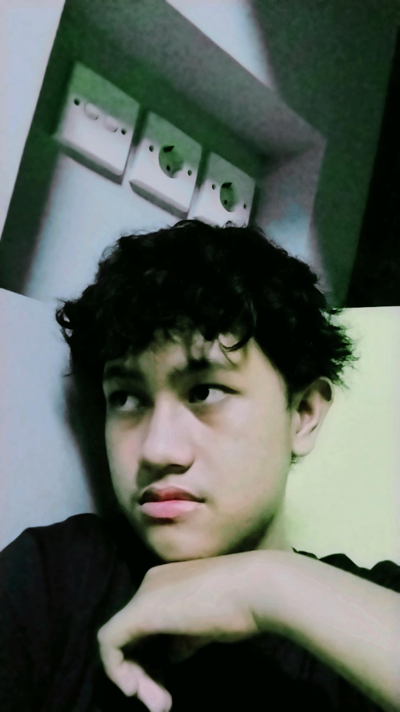
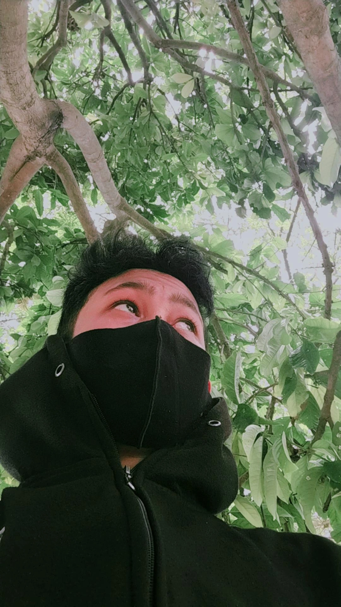
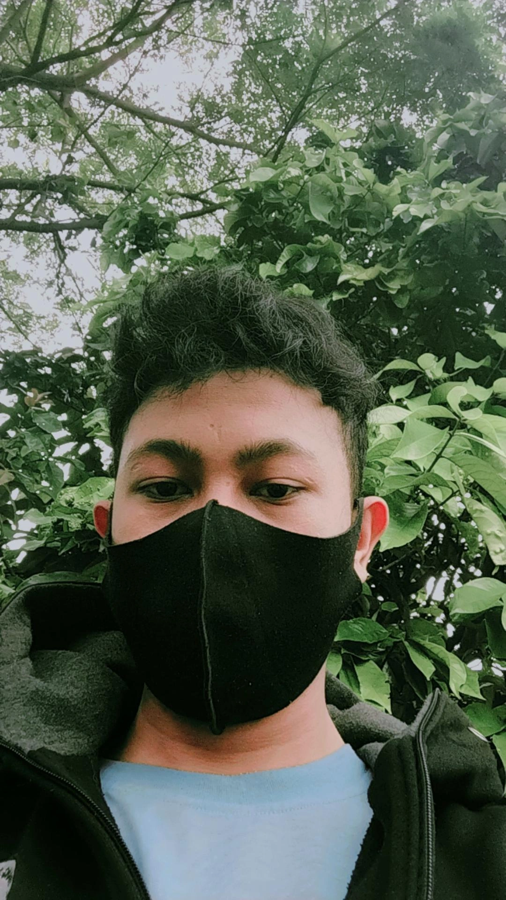

Creative Gallery
foto pribadi saya.
Photo Collection



Ricky
never gonna give you up.
song sad
Find my way.
Boku no hero Pieace
Music 4 brothers.
foto pribadi saya.
Photo Collectionnever gonna give you up.
Find my way.
Music 4 brothers.